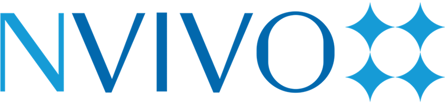
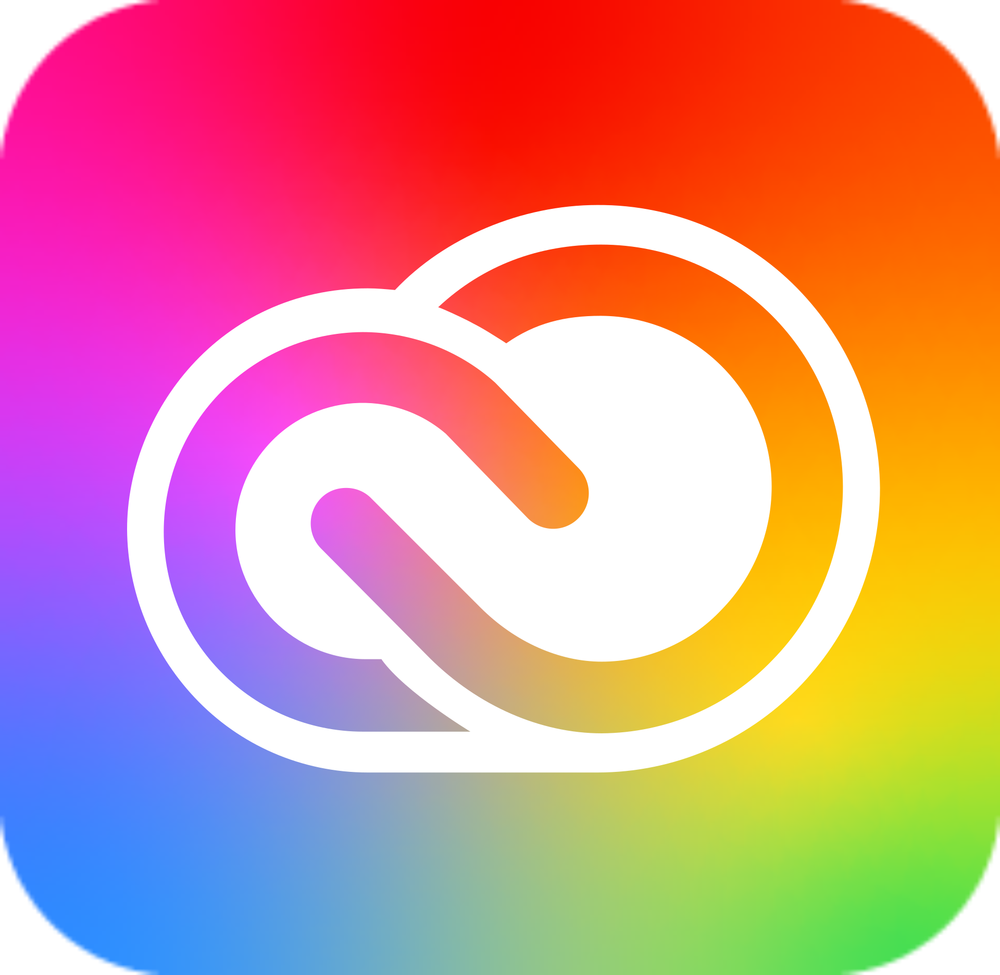

Capabilities
What I bring to a marketing team
Brand Strategy & Positioning
- Positioning against internal & external competitors
- Blue Ocean / Attribute - Differentiation mapping
- Buyer personas grounded in real survey data
- Purpose-driven campaign design
- Cross-cultural and international brand adaptation
- Go-to-market planning, budget to execution
Research & Consumer Insight
- Primary survey design & fielding
- In-store / retail audits
- Social listening & sentiment analysis
- Market sizing & segmentation funnels
Campaign & Media Planning
- Multi-channel media plans & budgets
- KPI design & performance tracking
- Creative concept development & brief writing
- Values-aligned creative strategy
- Experiential & influencer tactics
Digital & Inbound Marketing
- SEO / Google Business Profile optimization
- Inbound funnel design (attract–retain–delight)
- Copywriting & brand voice adaptation
- Social & digital channel auditing
- Website UX heuristic evaluation
Cross-functional & Client Collaboration
- Cross-functional team collaboration (research, media, writing, creative)
- Client & stakeholder interviews
- Incorporating external feedback into live strategy
- Agency - vendor coordination
Quantitative & Financial
- Sales & revenue forecasting
- NPV / IRR business case modeling
- Statistical analysis (regression, ANOVA)
- Data visualization (Excel, Power BI, Tableau)
Tools & Platforms


Brand and Marketing Work
Click on them to know more